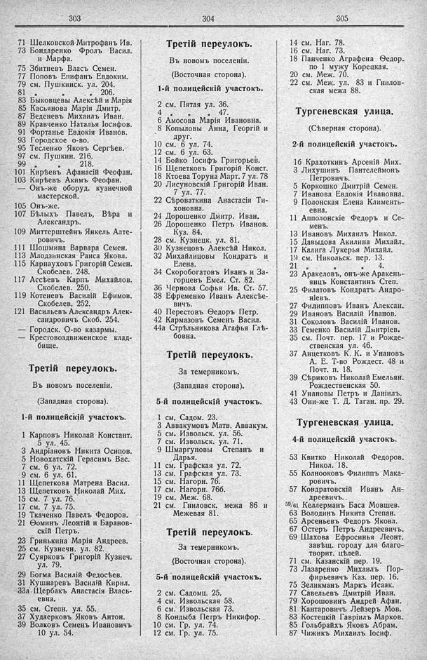

Лист источника 233
Скан

Распознанный текст
303
71 Шелковской Митрофанъ Ив.
73 Бондаренко Фролъ Васил.
и Марфа.
75 Збитневъ Власъ Семен.
77 Поповъ Епифанъ Евдоким.
79 см. Пушкинск. ул. 204.
81 „ „ 206.
83 Быковцевы Алексѣй и Марія
85 Касьянова Марія Дмитр.
87 Веденевъ Михаилъ Иван.
89 Кравченко Наталья Іосифов.
91 Фортанье Евдокія Иванов.
93 Городское о-во.
95 Тесленко Яковъ Сергѣев.
97 см. Пушкин. 216.
99 „ „ 218.
101 Кирѣевъ Афанасій Феофан.
103 Кирѣевъ Акимъ Феофан.
— Онъ-же оборуд. кузнечной
мастерской.
105 Онъ-же.
107 Бѣлыхъ Павелъ, Вѣра и
Александръ.
109 Миттерштейнъ Янкель Алте-
ровичъ.
111 Шошмина Варвара Семен.
113 Млодзинская Раиса Яковл.
115 Карнауховъ Григорій Семен.
Скобелев. 248.
117 Ассѣевъ Карпъ Михайлов.
Скобелев. 250.
119 Котеневъ Василій Ефимов.
Скобелев. 252.
121 Васильевъ Александръ Алек-
сандровичъ Скоб. 254.
— Городск. О-во казармы.
— Крестовоздвиженское клад-
бище.
Третій переулокъ.
Въ новомъ поселеніи.
(Западная сторона).
1-й полицейскій участокъ.
1 Карповъ Николай Констант.
5 ул. 45.
3 Андріановъ Никита Осипов.
5 Новохатскій Герасимъ Вас.
7 см. 6 ул. 72.
9 см. 6 ул. 61.
11 Щепеткова Матрена Васил.
13 Щепетковъ Николай Мих.
15 см. 7 ул. 76.
17 см. 7 ул. 75.
19 Ткаченко Павелъ Федоров.
21 Ѳоминъ Леонтій и Баранов-
скій Петръ.
23 Гринькина Марія Андреев.
25 см. Кузнечн. ул. 82.
27 Суярковъ Григорій Кузнеч.
ул. 79.
29 Богма Василій Федосѣев.
31 Кушнаревъ Василій Кирил.
33а Щербакъ Анастасія Влась-
евна.
35 см. Степн. ул. 55.
37 Худаерковъ Яковъ Антон.
39 Волковъ Семенъ Ивановичъ
10 ул. 54.
304
Третій переулокъ.
Въ новомъ поселеніи.
(Восточная сторона).
1-й полицейскій участокъ.
2 см. Пятая ул. 36.
4 „ „ 47.
6 Амосова Марія Ивановна.
8 Копыловы Анна, Георгій и
друг.
10 см. 6 ул. 74.
12 см. 6 ул. 63.
14 Бойко Іосифъ Григорьев.
16 Щепетковъ Григорій Конст.
18 Ктоева Торуна Март. 7 ул. 78
20 Лисуновскій Григорій Иван.
7 ул. 77.
22 Сѣроваткина Анастасія Ти-
хоновна.
24 Дорошенко Дмитр. Иван.
26 Дорошенко Петръ Иванов.
Куз. 84.
28 см. Кузнецк. ул. 81.
30 Кузнецовъ Алексѣй Никол.
32 Михайлицовы Кондратъ и
Елена.
34 Скоробогатовъ Иванъ и За-
горцевъ Емел. Ст. 82.
36 Чернова Софья Ив. Ст. 57.
38 Ефременко Иванъ Алексѣе-
вичъ.
40 Перестовъ Ѳедоръ Петр.
42 Кармазовъ Семенъ Васил.
44а Стрѣльникова Агафья Глѣ-
бовна.
Третій переулокъ.
За темерникомъ.
(Западная сторона).
5-й полицейскій участокъ.
1 см. Садом. 23.
3 Аввакумовъ Матв. Аввакум.
5 см. Извольск. ул. 56.
7 см. Извольск. ул. 71.
9 Шмаргуновы Степанъ и
Дарья.
11 см. Графская ул. 72.
13 см. Графская ул. 73.
15 см. Нагорн. 76.
17 см. Нагорн. 76б.
19 см. Меж. 68.
21 см. Гниловск. межа 86 и
Межевая 81.
Третій переулокъ.
За темерникомъ.
(Восточная сторона).
5-й полицейскій участокъ.
2 см. Садомц. 25.
4 см. Извольская 58.
6 см. Извольская 73.
8 Кондыба Петръ Никифор.
10 см. Гр. ул. 74.
12 см. Гр. ул. 75.
305
14 см. Наг. 78.
16 см. Наг. 73.
18 Панченко Аграфена Ѳедор.
по 1 мужу Корецкая.
20 см. Меж. 70.
22 см. Меж. ул. 83 и Гнилов-
ская межа 88.
Тургеневская улица.
(Сѣверная сторона).
2-й полицейскій участокъ.
16 Крахѳткинъ Арсеній Мих.
3 Лихушинъ Пантелеймонъ
Петровичъ.
5 Коркошко Дмитрій Семен.
7 Иванова Евдокія Ивановна.
9 Полонская Елена Климентъ-
евна.
11 Апполонскіе Федоръ и Се-
менъ.
13 Ивановъ Михаилъ Никол.
15 Давыдова Акилина Михайл.
17 Калига Лукерья Михайл.
19 см. Никольск. пер. 13.
21 „ „ 4.
23 Аракеловъ, онъ-же Аракень-
янцъ Константинъ Степ.
25 Филатовъ Кондратъ Андро-
нѣевъ.
27 Филипповъ Иванъ Алексан.
29 Ивановъ Василій Иванов.
31 Соколовъ Василій Иванов.
33 Геменко Василій Дмитріев.
35 см. Почт. пер. 17 и Рожде-
ственская ул. 46.
37 Анцетковъ К. К. и Унановъ
А. Е. Т-во Рождест. 48 и
Почт. п. 18.
39 Сѣриковъ Николай Емельян.
Рождественская 50.
41 Унановы Петръ и Даніилъ.
43 Они-же Т. Д. Таган. пр. 29.
Тургеневская улица.
4-й полицейскій участокъ.
53 Квитко Николай Федоров.
Никол. 18.
55 Колнооковъ Филиппъ Мака-
ровичъ.
57 Кондратовскій Иванъ Ан-
дреевичъ.
59/61 Келлерманъ Баса Мовшев.
63 Володинъ Никита Степан.
65 Арсеньевъ Федоръ Яковл.
67 Остеръ Петръ Андреевичъ.
69 Шахова Ефросинья Леонт.
завѣщ. городу для благо-
творит. цѣлей.
71 см. Казанскій пер. 19.
73 Лазаренко Михаилъ Пор-
фирьевичъ Каз. пер. 16.
75 Зеликманъ Маркъ Исаак.
77 Савельевъ Дмитрій Иван.
79 Хорошовинъ Андрей Афан.
81 Кантаровичъ Лейзеръ Мов.
83 Костецкій Гавріилъ Марков.
85 Гольбрайхъ Яковъ Абрам.
87 Чижикъ Михаилъ Іосиф.